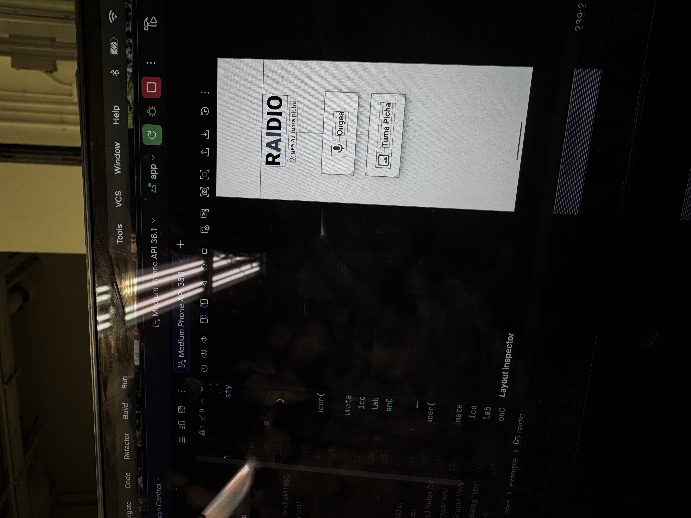
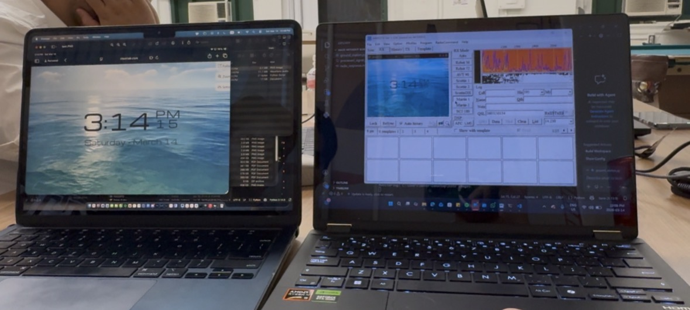
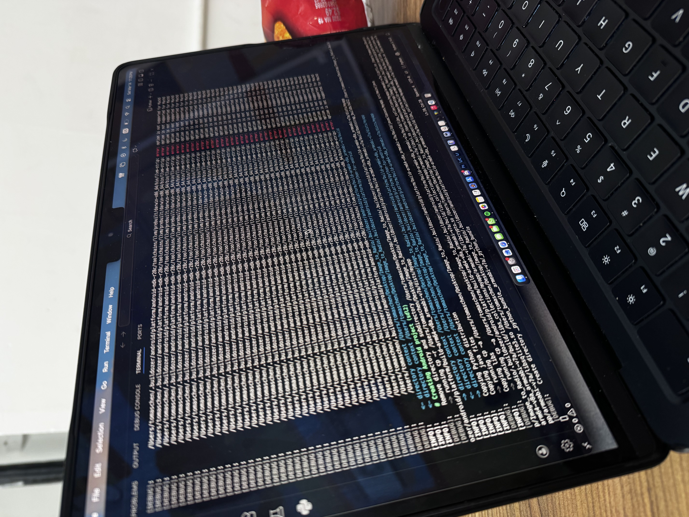

Overview
This project was engineered for the Hack Without Borders 2026 hackathon by me, Meher Patel, Tomas Chen, & Tayeb Marikar. The goal was to create a robust system capable of providing offline AI access to remote villages utilizing analog radio protocols.
Inspiration
After doing research, what we discovered was that as the entire world is revolutionized by AI and LLM Transformers, millions in rural Sub-Saharan Africa remain excluded. We identified three significant barriers to entry: limited computing power in financially strained remote villages, a lack of Wi-Fi infrastructure, and limited text literacy. We wanted to fill this gap with a realistic solution—a starting step towards bridging the digital divide.
How We Built It
To tackle this multifaceted issue, we engineered a system that merges cutting-edge multimodal AI with commonplace analog radios and older mobile phones. By converting visual questions into audible answers, we provide a lifeline of information to those off the grid. The architecture operates in four main stages:
- Input & Encoding: Users capture images of crop pests, medical concerns, or anything else using the app. We utilized Slow-Scan Television (SSTV) protocols (specifically Martin 1) to encode these images into audio tones. Alternatively, users can bypass images entirely and speak directly to the app.

- Transmission: These encoded audio tones travel over standard radio frequencies, completely bypassing the need for an internet connection.
- The "Intelligence" Hub: At a central receiving station, the tones are recorded and decoded back into images. We then integrated the Gemini 2.5 Flash API to analyze the decoded visuals and generate expert, contextual advice.
- Audio Output: Using Google Text-to-Speech (gTTS), the AI’s guidance is broadcast back over the radio in local languages, making the information accessible to everyone regardless of text literacy levels.

Challenges & Solutions
Module Integration & App Deployment: Our biggest hurdle was the seamless integration of disparate code modules into a single, functional application. We had to bridge Python backend logic with a mobile frontend using tools like Buildozer and Android Studio. Specifically, getting the Gemini API to efficiently handle raw audio inputs required over 16 hours of intense debugging. Seeing the entire interface finally work as a cohesive app felt like magic.

Signal Processing: Real-world radio transmission is noisy. Turning degraded, static-filled audio signals back into clear, decoded images was a major challenge. We had to heavily adjust audio filters and tweak our SSTV protocol handling to ensure the AI received legible images.
The Live Demo: As is a rite of passage in any hackathon, our live demo during the final presentation went wrong! It taught us a valuable lesson about the unpredictability of hardware and testing in live presentation environments versus controlled development setups.
Accomplishments & Skills Learnt
Coming into this event as a team of entirely Mechanical Engineers, this was our very first software hackathon. Building a complete, deployed application from scratch was a massive milestone for us.
- Full-Stack Mobile Development: This was our first time coding an app. We successfully learned to build a frontend UI, utilize Android Studio, and package Python code for mobile devices.
- API Integration: We learned how to securely manage API keys and route data through complex endpoints like the Gemini 2.5 Flash API and Google TTS.
- Systems Engineering: We gained hands-on experience marrying hardware (analog radio, SDRs) with software (SSTV protocols, AI).